BuildingEd Tools
Pencil Tool 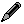
Use the Pencil Tool to draw and erase rooms.
- Left-click-drag to draw a rectangle. The area of the
rectangle will be filled with room tiles. The size of the
rectangle is displayed in the statusbar. Right-click to cancel the operation.
- Holding down the CTRL key activates the eraser mode.
CTRL-Left-click-drag to draw a rectangle. Room tiles in the area
of the rectangle will be erased. Right-click to cancel the operation.
- Right-click when the mouse pointer is over a room to switch to that room.
Wall Tool
Use the Wall Tool to create Wall Objects. Wall Objects may be
used to replace sections of a building's walls with a different tile,
to remove sections of walls, or to add free-standing walls to a
building.
Wall Objects have 2 tiles, an exterior wall tile and and interior wall
tile. Which of the 2 tiles gets displayed depends on whether the
wall is facing the inside of a room or not. When the
Wall Tool is active, choosing a tile from the 'Exterior Walls' or
'Interior Walls' category changes which tiles newly-created Wall
Objects will have. If the special "none"
tile is assigned to a Wall Object, no wall will be drawn, making it
possible to remove sections of walls between rooms or on the outside of
a building.
- Left-click-drag to create a horizontal or vertical Wall
Object. Wall Objects may be 1 or more tiles in length.
Right-click while creating an object to cancel.
- Hover the mouse pointer over an existing Wall Object to see its
resize handle. Left-click-drag the resize handle to change the
length of the Wall Object. Right-click while resizing to cancel.
- Wall objects may stack on top of each other. The top-most
Wall Object at a given position determines which wall tile is used.
- Where
a horizontal and vertical Wall Object intersect, the correct North-West
or South-East corner-tile will be chosen if both Wall Objects
use the same wall tile. If the tiles differ at a NW intersection,
both wall tiles are used, one in the Walls layer and one in the Walls2
layer. If the tiles differ at a SE intersection, the thin SE
corner tile is chosen to match the west-facing wall.
- Right-click to delete the Wall Object (or any other kind of object) that is under the mouse pointer.
Select and Move Rooms Tool
This tool allows you to select and move rooms and objects.
- Left-click-drag to draw a selection rectangle.
- Left-click inside the selection rectangle and drag the mouse to move the parts of rooms in the selected area.
- Left-click outside the selection rectangle to clear the selection.
- Hold down the CTRL key to affect every floor, not just the current floor.
- Hold down the SHIFT key to move objects as well.
Door Tool 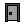
Use the Door Tool to place a door object. Doors must be placed on
the edge of a grid cell. Door objects have both a door tile and a
door frame tile assigned to them, either of which may be set to
"none". By placing a door on the edge of a room, the correct wall
tile is automatically chosen to leave a hole for the door.
- Left-click to place a door. When the mouse pointer is near the
left or right edge of a grid cell, the door will be a west- or
east-side door. When the mouse pointer is near the top or bottom edge
of a grid cell, the door will be a north- or south-side door.
- Right-click to delete the door (or any other kind of object) that is under the mouse pointer.
- Alt-Left-click to "pick" the object that is under the mouse pointer.
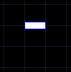

A north (or south) door.
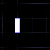 A west (or east) door.
Window Tool 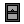
Use the Window Tool to place a window object. Windows must be
placed on the edge of a grid cell. Window objects have a
window tile, a curtains tile, and a shutters tile, any of which may be set to
"none". By placing a window on the edge of a room, the correct
wall tile is automatically chosen to leave a hole for the window.
- Left-click to place a window. When the mouse pointer is near the
left or right edge of a grid cell, the window will be a west- or east-side window.
When the mouse pointer is near the top or bottom edge of a grid cell,
the window will be a north- or south-side window.
- Right-click to delete the window (or any other kind of object) that is under the mouse pointer.
- Alt-Left-click to "pick" the object that is under the mouse pointer.
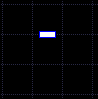 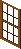 A north (or south) window.
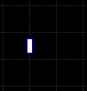 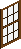 A west (or east) window.
Stairs Tool 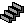
Use the Stairs Tool to place a staircase object. A staircase is
just tall enough (along the Z-axis) to reach the next floor. By
placing a staircase on a floor, the floor tiles on the floor above
the staircase are erased automatically. Note that there are only
3 tiles in a staircase, but the object itself occupies 5 tiles to
remind you to leave a spot for the player to enter and exit the
staircase.
- Left-click to place a staircase. When the mouse pointer is
near the bottom-left corner of a grid cell, the staircase will be
vertical.
When the mouse pointer is near the top-right corner of a grid
cell,
the staircase will be horizontal.
- Right-click to delete the staircase (or any other kind of object) that is under the mouse pointer.
- Alt-Left-click to "pick" the object that is under the mouse pointer.
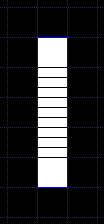 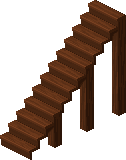 A vertical staircase.
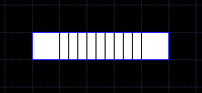 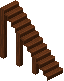 A horizontal staircase.
Roof Tool
Use the roof tool to create roof objects. All roof objects are
created by left-click-dragging to draw a rectangle defining the area of
the roof object. Some roof objects are restricted to how wide or
tall they may be.
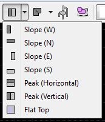
Slope (West) and Slope (East) roof objects may be 1, 2, or 3 tiles wide and any height.
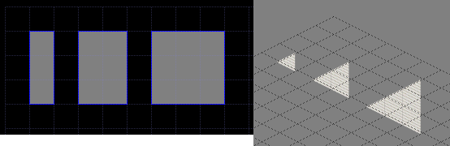 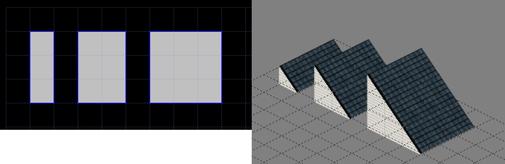
Slope (North) and Slope (South) roof objects may be 1, 2, or 3 tiles tall and any width.
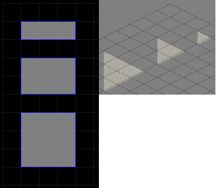 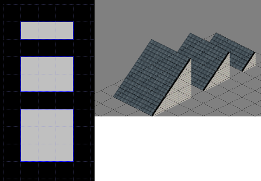
Peak (Vertical) roof objects may be any height and width. When
wider than 6 tiles, the gap is filled in with a flat section.
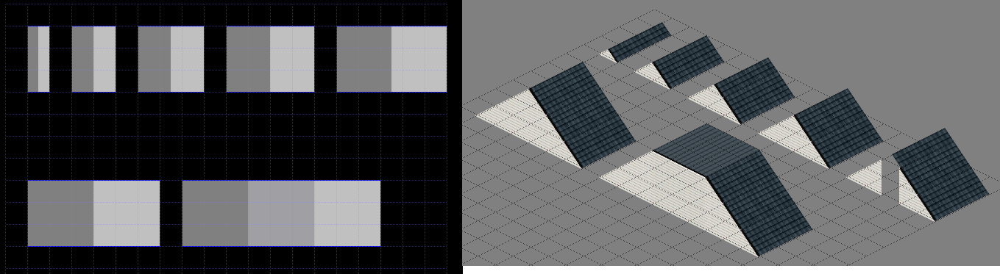
Peak (Horizontal) roof objects may be any size. When taller than 6 tiles, the gap is filled in with a flat section.
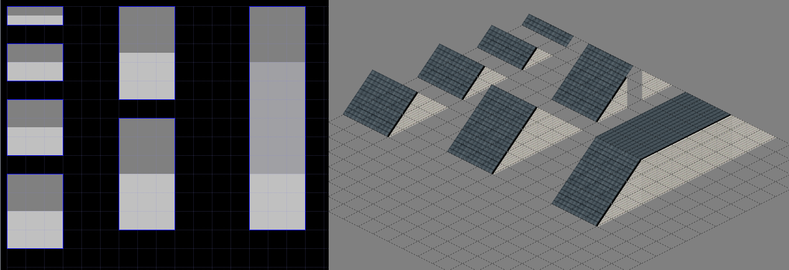
Flat Top roof objects may be any size. The depth along the Z-axis
of Flat Top roof objects can be set to Zero, One, Two, or Three.
When the depth is Zero, the flat top is drawn into the "Floor"
tile-layer of the floor the roof object is on. When the depth is
Three, the flat top is drawn into the "Floor" layer of the floor above the floor the object is on.
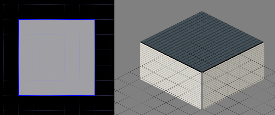
Roof Corner Tool
Use the Roof Corner Tool to place roof-corner objects.
Roof-corner objects may be used to join other roof objects together
visually. Roof-corner objects are created by left-click-dragging
to draw a rectangle defining the area of the object. Roof-corner
objects may be 1x1, 2x2, or 3x3 tiles in size.
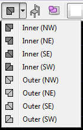
Typically, only the Inner NW, Outer NE/SE/SW roof-corner objects are used, but the other types may be used if you
later want to rotate or flip the building and end up with the correct
appearance for the rotated corners.
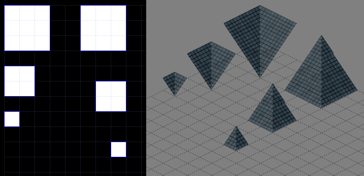
Furniture Tool 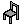
Use the Furniture Tool to place furniture objects. Furniture
objects are assigned a "furniture tile" which may be composed of
multiple individual tile images. Some furniture tiles, for example for
a table lamp, have only a single tile image, while other furniture
tiles, such as for a double-bed, have 4 tile images.
- Left-click to place a furniture object.
- When next to
the edge or corner of a room, the furniture object's orientation will
automatically be chosen. If you want to disable the chosen
orientation, hold down the CTRL key.
- In the corners of a room, 2 possible orientations could be
chosen. Move the mouse pointer next to either wall to choose the desired orientation. Some furniture tiles, such
as for kitchen counters, only have a single choice for each corner.
- Right-click to delete the furniture object (or any other kind of object) that is under the mouse pointer.
- Alt-Left-click to "pick" the object that is under the mouse pointer.
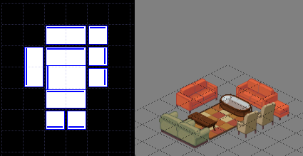
Select and Move Objects Tool
Use the Select and Move Objects Tool to select, deselect, and move
objects. Only objects on the current floor may be selected.
If the current floor changes for any reason, any selected objects are
first deselected.
- Left-click on an object to select it, clearing any previous selection.
- SHIFT-left-click on an object to add it to the selection.
- CTRL-left-click on an object to add it to the selection if it
wasn't already, or remove it from the selection if it was already
selected.
- Left-click-drag
on any selected object to move all the selected objects to a new
position. Hold the CTRL key to duplicate the objects instead of
moving them.
- Left-click-drag on an unselected object will first clear the
selection, select the clicked object, then drag the clicked object to a
new position.
- Left-click-drag
outside any object to draw a selection rectangle. When the left
mouse button is released, any objects touching the selection rectangle
will be affected the same as if clicking on those objects one at a
time. That is, the CTRL key will toggle the selected state of objects
in the selection rectangle, while the SHIFT key will always add
deselected objects to the selection.
- Right-click while dragging objects to cancel the operation.
-
If objects are dragged outside the grid (or to any invalid position), those objects will be deleted.
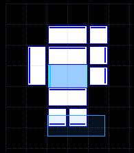